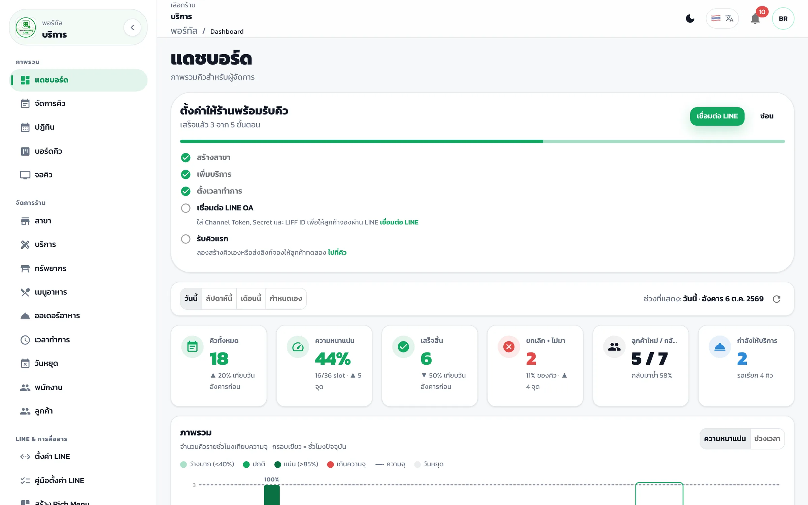
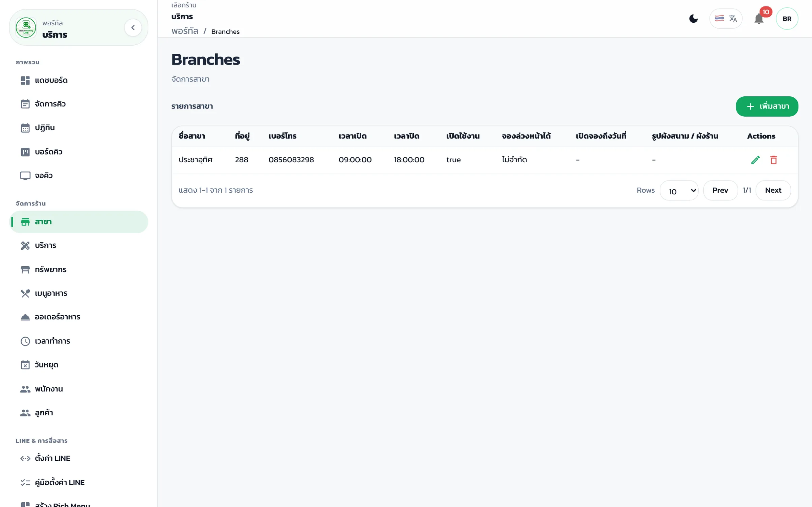
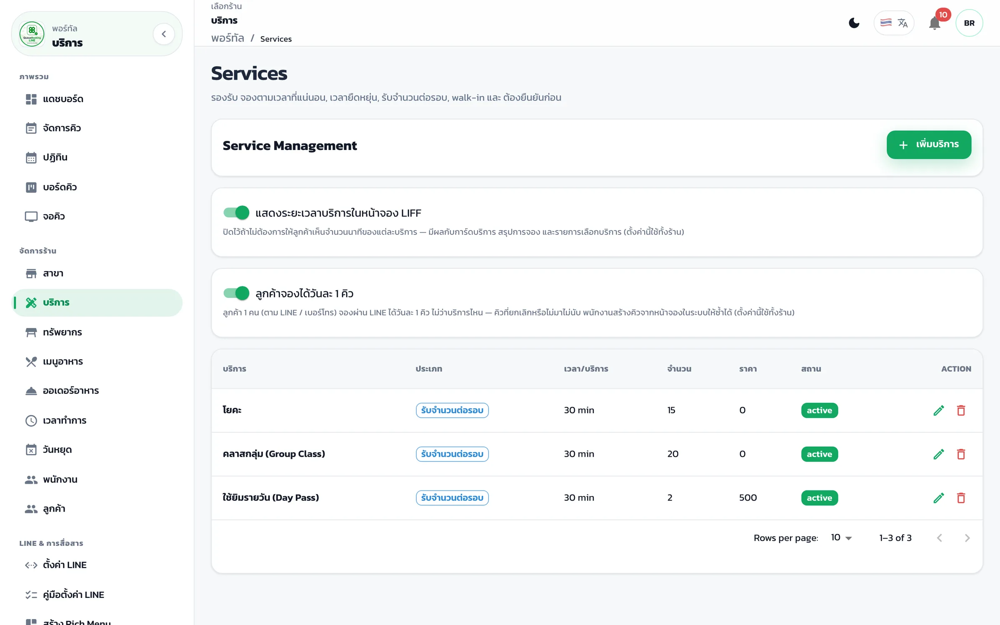
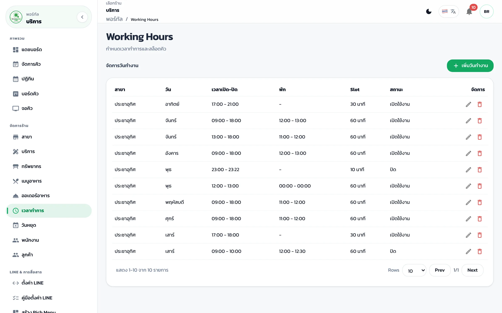

ตั้งค่าพื้นฐานของร้านใน Portal
Portal- สาขา เมนู “สาขา” → เพิ่มสาขา ใส่ชื่อ ที่อยู่ เบอร์โทร (อย่างน้อย 1 สาขา)
- บริการ เมนู “บริการ” → เพิ่มบริการ ใส่ชื่อ ระยะเวลา ราคา และจำนวนคิวต่อรอบ
- เวลาทำการ เมนู “เวลาทำการ” → ตั้งเวลาเปิด–ปิดแต่ละวัน ถ้าไม่ตั้ง ลูกค้าจะเห็นว่าร้านปิดทุกวัน



